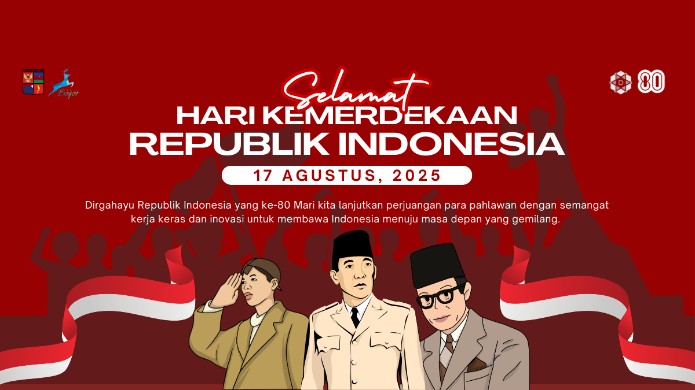
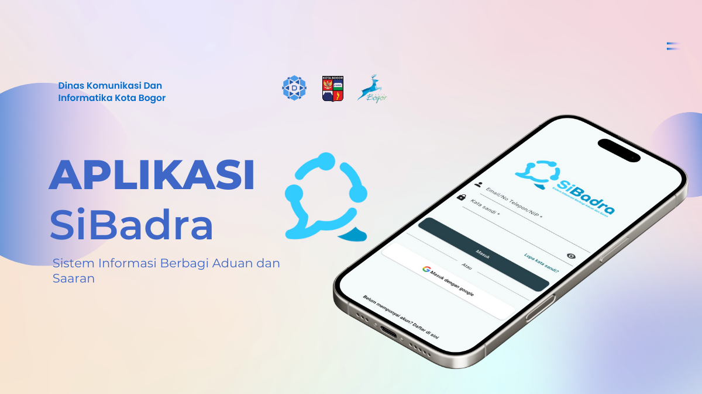

Pemerintah Kota Bogor
BERITA TERBARU
Berita atau artikel terbaru dari Dinas Komunikasi dan Informatika Kota Bogor

Pembukaan Passion X Fesma 2025 “A Voyage Through the Echoes of Sweet’s Life”

KOMISI III DPRD KOTA BOGOR KUNJUNGI DISKOMINFO KOTA BOGOR

Bansos Juli 2025 Dimulai! Buruan Cek Rekening dan Undangan Beras 20 Kg dari RT dan RW
Pejabat Diskominfo
Struktur Organisasi Dinas Komuikasi Dan Informatika Kota Bogor
Rudiyana S.STP.M.Sc
Kepala Dinas
Oki Tri Fasiasta Nurmala Alam, S.STP.
Sekretaris
Junenti Kolbert Nadeak, ST. ME
Kepala Bidang APTIKA
Dian Intannia Lesmana S.Sos. ME
Kepala Bidang Informasi dan Komunikasi Publik
BANNER LINK TERKAIT
Situs yang terkait dengan Dinas Komunikasi dan Informatika, Kota Bogor